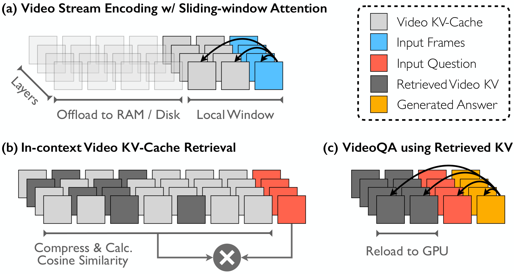

论文信息
| 研究问题 | 如何在视频持续输入、问题随时到达的情况下，避免反复编码历史帧，同时只把与问题相关的历史 KV 放回 GPU。 |
|---|---|
| 一句话 | ReKV 将流式视频编码与问答解耦：历史视频先按滑动窗口编码为可外存的 KV，收到问题后只检索相关片段 KV 参与生成。 |
| 与 VLA 的关系 | 它提供了“事件段 KV 可长期保存、被任务 query 检索后再回载”的后端范式；关键事件检测可替代其固定帧/块粒度的历史组织。 |
1. 核心摘要
传统 VideoQA 把完整视频与问题一起送入模型：既要等视频结束，也会在每个新问题到来时反复编码相同帧。ReKV 将任务改写为 StreamingVQA：时刻 t 只能使用已经观察到的视频前缀，却应能立刻回答新问题。方法在不额外训练 Video-LLM 的前提下，先连续生成历史 video KV-cache；对超长流，较早 KV 可以放至 RAM 或磁盘。
真正的关键是 query 到来后的 in-context retrieval。ReKV 不把全部历史 KV 回载到 GPU，而是在帧或帧块粒度以外部 CLIP-like 检索器、或 Video-LLM 内部 attention 表示计算相关性，只加载 Top-r 的 K/V，再与问题和生成 token 一起做 attention。论文报告在 LLaVA-OneVision-7B 上，RVS-Ego 的 streaming 准确率由均匀采样的 56.2 提升至内部检索的 63.7，同时问答延迟为 3.3 秒。
2. 研究动机
StreamingVQA 不等于离线 VideoQA 的长上下文版本
论文定义的视频流为 Vᵀ=[v₁,…,vᵀ]。问题 q 可以在任意 t≤T 抵达，回答只能依赖 Vᵗ。这与“先看完有限视频、后给一个问题”的离线设定不同：模型不能等待全部帧，也不能每次提问都重新从头 prefill。
稀疏采帧与全量上下文都不够
均匀采样会错过关键短时事件；全量帧则让 token、KV 和 attention 代价随流长度增长。即使已经把所有帧编码为 KV，若在回答每个问题时将所有 KV 回载，显存、数据传输和无关上下文干扰仍会成为瓶颈。因而作者同时处理两个阶段：流式编码时控制计算范围，问答时检索有限历史证据。
对历史事件记忆的启示
ReKV 的检索单位原本是帧或相邻帧块，未显式发现任务事件。对于 VLA，可将关键事件检测产生的事件段作为 KV 的持久化和检索单位：只有被确认的抓取、放置、状态切换等事件进入长期索引，避免把整个控制轨迹同等对待。
3. 方法论

原论文 Figure 2。上半部分以局部滑动窗口编码视频并将旧 KV 外存；下半部分用问题检索相关 KV，随后回载并生成答案。
3.1 三段式整体流程
图中 (a) 将视频分 chunk 输入 Video-LLM。当前 chunk 的 token 可以只注意最近的 local window，旧 video KV 仍被保留到外部存储；(b) 新问题到来时从历史中选出相关 K/V；(c) 这些 K/V 被载入 GPU，作为问题和自回归答案 token 的 attention context。视频分析与问答因此可被分开部署在不同进程或 GPU 上。
3.2 滑动窗口视频编码：把在线计算限制在局部
记历史 K/V 为 P，当前 chunk token 为 X，从 P 末尾截取长度为 lL 的局部 K/V 得 L。编码时使用 Attn(WQX, [Lk, WKX], [Lv, WVX])。这让新 chunk 的注意力只依赖近期窗口，降低流式 prefill 成本；但每个 chunk 生成的 video KV 不会立刻遗忘，而是供之后的问题检索。
3.3 外部检索与内部检索
外部检索使用 CLIP-like 图像编码器将帧映射为 v=fv(frame)，文本编码器将问题映射为 q=ft(question)，以余弦相似度 sim(v,q)=v·q/(τ||v||||q||) 排序。为降低粒度，可把连续 b 帧平均成 block，再检索 Top-⌈r/b⌉ 块。
内部检索不引入外部编码器：每层把一帧的 key token 平均为帧向量，问题则由其 query token 平均得到问题向量，再做相似度检索。不同 self-attention 层可选出不同视频块，因此能保留层间语义差异；并且复用已经计算的模型内部表示，减少额外开销。
3.4 回载 KV 后的回答与位置编码
检索出的 Rk,Rv 直接作为回答阶段的 context：Attn(WQX, [Rk, WKX], [Rv, WVX])，其中 X 是问题或当前待生成 token。视频流编码沿用 LM-Infinite 的局部窗口与远距离 ceiling；回答阶段则把取回的视频 K/V 当作连续位置处理。论文比较了另一种静态位置方案，发现标准 RoPE 用于取回视频 token 的表现更好，作者将其归因于视频理解仍需要时间信息。
3.5 VLA 迁移时应保留的边界
ReKV 的 retrieval 发生在“问题到来后”，适合作为长程回溯路径，而非每个控制周期的热路径。VLA 可将当前控制窗口的 KV 常驻 GPU；已确认事件段的 KV、关键帧摘要及元数据放到 RAM/disk；当 instruction、失败恢复或高层规划需要历史证据时，再由语言和状态 query 取回相关段。
4. 实验与结果
设置。论文以 LLaVA-OneVision 0.5B/7B 为基础，测试离线长视频基准 MLVU、QaEgo4D、EgoSchema、ActivityNet-QA，以及流式 RVS-Ego、RVS-Movie。StreamingVQA 表同时报告准确率、开放回答 score、视频编码速度、从问题输入至生成结束的 latency、峰值 GPU 显存与每小时外存 KV 大小。
| 同一 StreamingVQA 设置 | 均匀采样 | 外部检索 | 内部检索 | 结论 |
|---|---|---|---|---|
| LLaVA-OV-7B，RVS-Ego Acc. | 56.2 | 62.4 | 63.7 | 检索显著优于只采样历史帧。 |
| LLaVA-OV-7B，RVS-Movie Acc. | 43.0 | 53.6 | 54.4 | 内部表示检索在两个流式域中均更高。 |
| LLaVA-OV-7B，问答 latency | 2.9s | 5.8s | 3.3s | 内部检索避免外部模型带来的额外时延。 |
| LLaVA-OV-7B，峰值 GPU | 21GB | 55GB | 38GB | 准确率收益仍需以 KV 回载显存为代价。 |
离线长视频上，LLaVA-OV-7B 加 ReKV 后在 MLVU dev Acc. 从 64.7 提升至 68.5，QaEgo4D test Acc. 从 52.8 提升至 56.0，ActivityNet-QA Acc. 从 56.6 提升至 60.4。消融层面，外部与内部 retrieval 的比较直接验证：当既有 Video-LLM 已有可用 attention 表示时，内部检索是更快的选择；但其每小时 KV 仍为 18.8GB，说明 ReKV 解决“GPU 常驻上下文”而非无损消除历史存储成本。
5. 优势与局限
| 优势 | 局限 / 迁移注意点 |
|---|---|
|
|
6. 总结
ReKV 将长视频历史由“必须常驻在当前上下文”改为“可外存、可检索、按需回载的 K/V 证据库”。滑动窗口保证流式编码不会随历史长度无限扩张，query-aware retrieval 则使问题只接触少量相关历史。它对 VLA 的最大价值是提供长期回溯的数据面。
若将 KEMO/关键事件检测负责“什么值得写”，ReKV 可以负责“写下的 KV 如何被高层 query 找回”。更完整的系统需要再加入事件级索引、状态/接触元数据和热路径/冷路径的时延预算，避免将所有历史检索都放进动作控制循环。